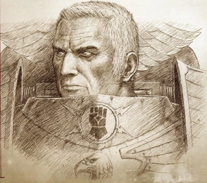

Elige tu Primarca


Alpharius Omegon

Alpharius (también conocido como el Último Primarca) fueron en realidad dos hermanos gemelos idénticos, y uno de los veinte Primarcas creados por el Emperador de la Humanidad en los primeros tiempos del Imperio de la Humanidad, poco después de la Era de los Conflictos en el 30º Milenio. Al igual que los otros Primarcas, Alpharius y su hermano gemelo Omegon fueron transportados desde el laboratorio genético del Emperador en las Montañas del Himalaya de Terra a través de la Disformidad por los Dioses del Caos, y situados en un lejano mundo en un intento de prevenir el auge del Imperio del Hombre y la expansión de este a través de la Vía Láctea. Alpharius Omegon fue descubierto por el Primarca Horus, y enviado a conocer a su padre a Terra, quien le puso (y en secreto a su hermano) al mando de la XX Legión de los Marines Espaciales, la Legión Alfa, durante la Gran Cruzada del M31.
Angron

Angron (también conocido como el Ángel Rojo) es el Primarca de la Legión de los Devoradores de Mundos. Sucumbió al influjo del Caos durante la Herejía de Horus, convirtiéndose más tarde en un Príncipe Demonio de Khorne. Angron fue llevado a la flota de la XII Legión, los Perros de la Guerra. Teleportado a la nave insignia, inicialmente Angron se negó a tener nada que ver con su Legión, y cuando varios Capitanes trataron de hablar con él, los mató brutalmente, ya que el Emperador había ordenado que no se pusiera una mano sobre Angron. Al final, el Capitán Khârn de la 8ª Compañía de Asalto logró entablar una conversación con Angron, hablando sobre los rituales de los gladiadores de Angron y las tradiciones de los Perros de la Guerra. Convencido ya de su valía, Angron tomó control total sobre su Legión, a la cual renombró los Devoradores de Mundos, diciendo que formarían nuevas tradiciones juntos. Durante la Gran Cruzada, Angron logró muchas victorias, aunque algunos criticaron las tácticas extremas y sanguinarias que utilizó para asegurar la destrucción de sus oponentes. Sin embargo, la unión de Angron y su Legión tuvo un precio muy alto para sus hijos. Como todos los gladiadores de su mundo natal, Angron recibió neuro-implantes especiales, que aumentaron increíblemente su agresividad pero que, como efecto secundario, también le ocasionaban incontrolables ataques de furia fuera de la batalla. Angron ordenó a sus Tecnomarines duplicar esta tecnología y a todos los reclutas que se sometiesen al proceso que los convertiría en guerreros agresivos y sin miedo. A pesar de las ventajas evidentes, el Emperador se disgustó, y ordenó que se detuviera. Angron no le hizo caso y continuó con la indeseable práctica en secreto.
Corvus Corax

Corvus Corax es el Primarca actualmente desaparecido del Capítulo de Marines Espaciales de la Guardia del Cuervo y de todos sus Capítulos Sucesores. Después de la destrucción casi total de su XIX Legión durante la Masacre del Desembarco en Istvaan V al inicio de la Herejía de Horus, Corax estaba desesperado por reconstruir su Legión. Con el permiso del Emperador, él y sus Astartes se adentraron en las profundidades del Palacio Imperial para recuperar el avanzado conocimiento genético que el Emperador había utilizado para crear los Primarcas. Corax, a continuación, hizo uso de estas técnicas y recuperó la plantilla genética original del Primarca para acelerar el desarrollo de nuevos Astartes de la Guardia del Cuervo. Las repercusiones de esas acciones volvió a perseguirlo, haciendo que Corax concediese finalmente la Paz del Emperador a todos los retorcidos mutantes que surgieron como resultado de sus experimentos. Corax desapareció luego en el Ojo del Terror, en busca de penitencia por su vergüenza. Su paradero y estado actuales siguen siendo desconocidas para el Capítulo y el Imperio.
Fulgrim

Fulgrim, también conocido antes de la Herejía de Horus como el Fénix, es el Primarca de la Legión Traidora de los Hijos del Emperador. Considerado por muchos como el más bello de los Primarcas, tenía una larga cabellera blanca-plateada, y un carácter un tanto engreido, pues toda su vida estaba dedicada a la búsqueda de la perfección absoluta: física, mental y espiritual. Aprovechando esta debilidad, un Gran Demonio de Slaanesh poseyó su cuerpo durante un tiempo, pero Fulgrim utilizó su aprisionamiento espiritual para explorar con mayor profundidad el poder del Caos, y acabó por derrotar al Demonio y aprisionarlo para recuperar el control de su cuerpo. Fulgrim emergió de aquella experiencia incluso más entregado a la persecución de la senda de las sensaciones ofrecida por Slaanesh y el Caos, y tras la Herejía su devoción fue recompensada con la ascensión al rango de Príncipe Demonio del Dios del Placer. Hoy en día, Fulgrim es un Príncipe Demonio serpentino de cuatro brazos al servicio de Slaanesh, y se cree que reside en un Mundo Demoníaco en algún lugar del Ojo del Terror. Su localización exacta sigue siendo desconocida para el Imperio y la mayoría de miembros de la Legión de los Hijos del Emperador que aún vagan por la Galaxia buscando su propio placer y ascensión. Algo que casi nadie sabe, incluyendo sus propios Hijos del Emperador, es que Fulgrim mostró remordimientos en la Masacre del Desembarco en Istvaan V, arrepintiéndose de haberse dejado corromper por los Poderes Ruinosos, en los primeros días de la Herejía de Horus.
Horus Lupercal
Horus, también conocido en vida como Lupercal por los Astartes de su Legión, los Lobos Lunares, fue uno de los veinte Primarcas genéticamente diseñados y creados por el Emperador de la Humanidad a partir de la base de su propio ADN antes del comienzo de la Gran Cruzada para liderar a sus ejércitos del recién nacido Imperio del Hombre. Horus era el Primarca de la XVI Legión, los Lobos Lunares (más tarde renombrada los Hijos de Horus), el primer Señor de la Guerra Imperial, el hijo más favorecido del Emperador, y en última instancia el mayor Traidor en la Historia de la Humanidad. El mundo natal de Horus fue el Mundo Colmena de Cthonia, que estaba a sólo unos pocos años luz de Terra. Así fue como Horus fue el primer Primarca en ser redescubierto por el Emperador después de que este comenzara la Gran Cruzada a principios del M31. Más tarde Horus sería el responsable de desatar la horrenda guerra civil de siete años de duración, conocida como la Herejía de Horus, sobre el Imperio del Hombre a principios del M31, que mató a billones de hombres, mujeres y niños en búsqueda de su alocada ambición de derrocar al Emperador de la Humanidad y reemplazarlo como el regente de la raza humana. Finalmente, Horus perdió en su apuesta por el poder y fue asesinado por el padre que una vez amó durante la Batalla de Terra. Sus acciones dañaron al Imperio del Hombre más allá de toda reparación e inauguraron la actual Era del Imperio, donde la Humanidad es acosada por innumerables y horrorosos peligros para su existencia y la del Imperio, que se ha convertido en una presencia galáctica estancada, represiva, intolerante y deshumanizada.
Jaghatai Khan
Jaghatai Khan es el Primarca desaparecido de la Legión de Marines Espaciales de los Cicatrices Blancas. Desapareció junto con toda la 1ª Hermandad de los Cicatrices Blancas mientras perseguía a una Kábala de Eldars Oscuros cerca de la Fisura Disforme conocida como el Torbellino. El historiador Carpinus, que recopiló una historia detallada de la Gran Cruzada (el llamado Speculum Historiale), afirma que los ejércitos de Jaghatai concluyeron la destrucción del reino del Palatino apenas seis meses antes de la llegada del Emperador a Chogoris. Cuando los dos hombres se encontraron, se dice que el Khan supo inmediatamente que acababa de conocer a quien representaba el ideal supremo por el que siempre había luchado, un hombre que podía unir a todas las estrellas del cielo. En su palacio de Quan Zhou y frente a todos sus generales, se arrodilló y juró lealtad eterna al Emperador. El Primarca recibió el mando de la V Legión, que adoptó las largas cicatrices faciales de los miembros de la tribu de los Talskar, que van desde la frente hasta la barbilla, y cambió su nombre por el de Cicatrices Blancas. El Gran Khan ascendió a los cielos con el Emperador y legó su imperio a su general, Ogedei. Muchos de los seguidores de Jaghatai decidieron unirse a su Khan y se transformaron en Marines Espaciales de la Legión.
Konrad Kurze
Konrad Curze, más conocido como el Acechante Nocturno, fue uno de los 20 Primarcas sobrehumanos creados por el Emperador, y el líder de la VIII Legión de Marines Espaciales, los Amos de la Noche. Durante la Herejía de Horus se unió al Architraidor Señor de la Guerra en su rebelión contra el Imperio. Poco después de la derrota del Asedio de Terra, fue asesinado en la Cámara de los Lamentos de su palacio en Tsagualsa (en la Franja Este) por una Asesina Callidus llamada M'Shen. Su Legión, ahora dividida en partidas de guerra rivales por falta de una figura de mando absoluto, acabó retirándose al Ojo del Terror como el resto de Legiones Traidoras, desde donde sigue atacando territorio imperial en terribles genocidios. El niño que sería conocido como Konrad Curze aparece mencionado por primera vez en los archivos cuando su cápsula de gestación penetró a través de la corteza y el manto del planeta envuelto en noche de Nostramo, tras la misteriosa abducción a la Disformidad de los Primarcas en los laboratorios genéticos del Emperador en Terra llevada a cabo por los Dioses del Caos. Nostramo era un mundo habitado por humanos que orbitaba un sol moribundo cuya luz apenas llegaba ya al planeta, dejándolo atrapado en una oscuridad perpetua. La corteza de Nostramo contenía un alto grado del estratégico adamantio, que proporcionaba la base de las inmensas instalaciones mineras, refinerías e industrias del planeta y estas a su vez mantenían la economía de sus enormes Colmenas. La vasta mayoría de la población vivía en la más absoluta pobreza, trabajando en terribles condiciones en las minas y fábricas mientras los ricos crecían en opulencia, explotando a los ya maltratados obreros. El crimen casi no encontraba oposición, la depresión no tenía escapatoria debido a la constante oscuridad, y la superpoblación se mantenía a raya más por el suicidio que por cualquier otra medida. A diferencia de muchos de los demás Primarcas, Konrad Cruze no fue acogido por ninguna familia, y hubo de criarse por sí solo en la extensa Subcolmena de la Colmena más grande del planeta, Nostramo Quintus. Pasó sus primeros años de vida sobreviviendo gracias a su astucia y determinación, alimentándose de las bestias salvajes que cazaba en los túneles. Era constantemente atacado por visiones del futuro más oscuro posible, horripilantes sueños que le maldecirían durante toda su vida.
Leman Russ

Leman Russ, también conocido como el Rey Lobo y el Señor del Invierno y la Ruina, es el Primarca, actualmente desaparecido, del Capítulo de Marines Espaciales de los Lobos Espaciales. Dirigió a la Legión de los Lobos Espaciales durante la Gran Cruzada y la Herejía de Horus, y es famoso en la historia imperial por su odio hacia los poderes psíquicos y la hechicería, a los que consideraba deshonrosos. Algunos rumores afirman que él es el desconocido Señor Lobo responsable del reciente regreso de la 13ª Gran Compañía de los Lobos Espaciales al espacio real, tras diez milenios de lucha contra el Caos en la Disformidad, durante la 13ª Cruzada Negra. Algunos modelos de tanques utilizados por la Guardia Imperial han recibido su nombre. El Tanque de Batalla Leman Russ es el más famoso, y existen varios modelos de dicho tanque que son ampliamente utilizados en todo el Imperio de la Humanidad, como el Leman Russ Demolisher. De todos los Primarcas de las Legiones Astartes, pocos estuvieron tan envueltos en leyendas o fueron tan incomprendidos como Leman Russ, señor de los Lobos Espaciales y soberano del helado mundo letal de Fenris. Para algunos no era más que un jefe salvaje y bestial dotado del poder de un dios, o uno de los "monstruos" del Emperador, tan terrorífico e inhumano a su manera como el Acechante Nocturno, obsesionado con el horror, o Angron, el berserker cubierto de sangre. Para otros era un caudillo incomparable, feroz más allá de toda medida, pero también impecablemente leal, tan inquebrantable en la batalla como inflexible, y con un corazón tan frío para sus enemigos como la escarcha asesina que envolvía los inviernos de su planeta. Quizás ambas opiniones fuesen ciertas hasta cierto punto, pero ninguna representaba toda la verdad, pues aunque Leman Russ era indudablemente salvaje, y estaba marcado por la bestialidad a diferencia de sus hermanos, también era más sabio que lo que la bárbara apariencia de su Legión daba a entender, y más consciente de sí mismo de lo que muchos suponían, lo que le hacía el doble de peligroso.
Lion El'Jonson
Lion El'Jonson (a veces escrito Lión El'Jonson), o el León, era el Primarca de la Legión Astartes de los Ángeles Oscuros. Lion fue robado de los laboratorios y expulsado al espacio como los demás Primarcas, y acabó por aterrizar en el planeta Caliban, un mundo bello pero contaminado por el Caos debido a su proximidad al Ojo del Terror. La cápsula de Jonson aterrizó en un área remota de Caliban, lejos de cualquier asentamiento humano. No hay registros sobre cómo sobrevivió o a qué se enfrentó en la jungla durante sus primeros años, un territorio en el que cualquier hombre normal no sobreviviría más de diez minutos. Vivió una década en la selva, solo y sin nadie que le ayudase. Al final de esos diez años se encontró con sus primeros humanos, un grupo de caballeros de La Orden. Mientras los caballeros se preparaban para matar a Jonson, uno de ellos, llamado Luther, sintió algo especial en este aparentemente salvaje ser, y evitó que los demás caballeros le atacasen. Luther y el grupo trajeron a Jonson de vuelta a su Fortaleza Monasterio y lo bautizaron como Lion El'Jonson, "León Hijo del Bosque", por el lugar y las circunstancias en que lo habían hallado. Jonson creció rápidamente y se adaptó a las costumbres de los habitantes del planeta, aprendiendo a hablar a una velocidad impresionante, aunque nunca contó nada sobre sus primeros diez años de vida. Luther y Jonson formaron una fuerte amistad, complementándose en habilidades y capacidades. Fue entonces cuando se descubrieron los principales dones de Jonson: era un estratega brillante, y nada podía detenerlo cuando se decidía a seguir un curso de acción. Juntos, los dos guerreros subieron por los rangos de La Orden y extendieron la fama de La Orden gracias a las misiones que emprendieron juntos.
Lorgar
Lorgar Aureliano, también llamado "el Urizen" antes de la Herejía de Horus, es un Príncipe Demonio del Caos Absoluto y el Primarca de la Legión Traidora de los Portadores de la Palabra. Siempre determinado a elevar a la Humanidad a través de una profunda fe en lo divino; una vez que el Emperador de la Humanidad rechazó sus intentos de adoración, Lorgar descubrió nuevos dioses, los Poderes Ruinosos del Caos, más dignos de su devoción, durante su infame Peregrinaje. Fue el primer Primarca de las Legiones de Marines Espaciales en caer ante la corrupción del Caos antes de la Herejía de Horus y fue quien ordenó la corrupción del Señor de la Guerra Horus. Él y su gran Legión Traidora de Marines Espaciales del Caos, los Portadores de la Palabra, pueden ser encontrados hoy en el Mundo Demoníaco de Sicarus dentro del Ojo del Terror. La juventud del Primarca estuvo plagada de visiones de un poderoso guerrero en una brillante armadura de bronce que llegaba a Colchis, con un cíclope gigantesco vestido con una túnica azul junto a él. En cierto momento, las visiones llegaron a tal intensidad que Lorgar proclamó que el profetizado retorno del único y verdadero Dios de Colchis estaba cerca. Comenzó a predicar la noticia a la gente de Colchis, causando problemas al gobierno del Cónclave a medida que la gente se convertía a sus creencias disidentes. Sus enemigos en El Cónclave vieron en esto la oportunidad que habían estado esperando para eliminar la amenaza que Lorgar era para el status quo, declarándolo Hereje. Aquellos que fueron a arrestar a Lorgar fueron asesinados por sus seguidores. El Cónclave se dividió en dos facciones y una guerra sagrada de inmensas proporciones estalló, lo que obligó a la población de Colchis a escoger bandos. Esta guerra duró seis años, terminando con Lorgar y sus seguidores asaltando el templo donde el Primarca se había entrenado, matando a los monjes en su interior y eliminando el corazón de la resistencia religiosa a sus ideas.
Magnus El Rojo
Magnus el Rojo, Primarca de la Legión Traidora de los Mil Hijos, es uno de los pocos Primarcas que siguen vivos, y actualmente es un Príncipe Demonio extremadamente poderoso al servicio del Dios del Caos Tzeentch. También era conocido como el Rey Carmesí o el Cíclope Rojo. Un gigante en términos tanto físicos como psíquicos, el Primarca de piel cobriza poseía una tremenda habilidad psíquica innata, y constantemente estudiaba e intentaba entender la Disformidad, convirtiéndose en un hechicero de formidable poder. Magnus creía que sería capaz de controlar el Gran Océano de energía psíquica que era la Disformidad, aunque su prodigiosa y descuidada aplicación de sus dones psíquicos acabó por hacerle caer en desgracia ante su padre, el Emperador, así como ante la mayor parte de sus hermanos Primarcas. Su inmadurez psíquica, su imprudencia y su arrogancia también causaron su perdición, pues al final provocaron su condenación y servicio al Dios del Cambio. Durante la Gran Traición, se vio atacado por Leman Russ y sus Lobos Espaciales, con lo que huyó al Ojo del Terror y se unió a la rebelión de Horus. Desde la Herejía de Horus, ha pasado la mayor parte del tiempo instalado en lo alto de su torre en el Planeta de los Hechiceros en el Ojo del Terror, planeando la destrucción definitiva del Imperio que cree que le traicionó a él y a su Legión.
Ferrus Manus
Ferrus Manus, también conocido como la Gorgona, fue el Primarca de la Legión de Marines Espaciales de los Manos de Hierro, y un maestro herrero conocido por sus armas capaces de inspirar admiración en cualquiera que las viese. Ferrus forjó una espada única, Filo de Fuego, para su hermano Fulgrim, Primarca de los Hijos del Emperador, el cual forjó un martillo de guerra que entregó a Ferrus: Rompeforjas. Ferrus forjó también una pistola bólter para Vulkan, Primarca de los Salamandras, de la que se dice que tenía un cañón diseñado para parecerse a las fauces abiertas de un dragón. Las manos de Ferrus estaban cubiertas de la sustancia conocida como metal viviente y por tanto no necesitaba ni martillo ni fuego para la metalurgia, usando sólo sus excepcionalmente poderosas manos para moldear y dar forma al metal fundido. Ferrus creó un fuerte lazo de amistad con su hermano Fulgrim, pero su relación acabó en tragedia después de que Fulgrim fuese seducido por las promesas del Caos al inicio de la Herejía de Horus. Durante la Masacre del Desembarco en el planeta Istvaan V, Fulgrim decapitó a Ferrus con una espada demoníaca, acción que condenó a la esclavitud del Primarca de los Hijos del Emperador a las órdenes de un Gran Demonio del Dios del Caos Slaanesh.
Mortarion
Mortarion (conocido también como el Señor de la Muerte y Príncipe de la Decadencia) fue uno de los veinte Primarcas. Se le dio el mando de la Legión de la Guardia de la Muerte con la llegada del Emperador a su planeta, pero posteriormente se rebeló contra él y se pasó al bando del Caos durante la Herejía de Horus. Actualmente es un Primarca Demonio al servicio de Nurgle. De todos los mundos en los que acabaron dispersos los Primarcas, pocos eran lugares tan terribles o desesperados como el condenado Barbarus. Poco puede decirse con seguridad de este remoto y maligno mundo, o de los años de formación pasados allí por el joven Primarca, ya que parece que nada más producirse el hallazgo de Mortarion la verdad fue editada y oscurecida por la mano del propio Emperador. Quizás lo que se encontró en Barbarus era demasiado para que el público lo supiese, o contenía demasiadas verdades consideradas peligrosas para el resto de la Humanidad o incluso para los guerreros de otras Legiones. La información consistente que hoy día se puede extraer de la historia de Barbarus y del Primarca de la Guardia de la Muerte procede de una única fuente: los Rollos Estigios de Lackland Thorn. Thorn era una figura famosa aunque de mala reputación, un historiador adjunto a la Flota Expedicionaria que penetró en la oscura nebulosa que envolvía a Barbarus. Thorn era un polímata, altamente dotado como traductor de lenguas xenos, como anticuario y como poeta, pero su visión era altamente morbosa, y sus obras enervaban tanto como iluminaban. Su lugar en la Gran Cruzada quedó sellado cuando desapareció poco después de completar su obra maestra. En Barbarus encontraría la apoteosis de su oscuro arte registrando la historia de Mortarion para la posteridad, y su trabajo resultante, los Rollos Estigios, se convirtió en parte de la cultura de la Guardia de la Muerte: una copia era regalada a cada Marine Espacial de la Legión al ser ascendido formalmente al rango de iniciado completo. Fuera de la Guardia de la Muerte, sin embargo, el libro fue ampliamente censurado y considerado siniestro y horrible, demasiado oscuro para ser otra cosa que una pesadillesca alegoría. Esta opinión era equivocada.
Perturabo
Perturabo es el Primarca de la Legión Traidora de los Guerreros de Hierro. Él y su Legión se aliaron con el Caos durante la Herejía de Horus, y posteriormente fue ascendido al rango de Príncipe Demonio. Él, como sus Guerreros de Hierro, poseía una afinidad natural hacia el uso intensivo de la tecnología en combate y una lógica fría y desprovista de emociones al tratar con otras personas, pero carecía de fuerza de fe tanto en el Emperador como en los Dioses del Caos a los que luego juraría lealtad. El mundo en el que el Primarca de la IV Legión cayó cuando él y sus hermanos fueron dispersados por la galaxia fue Olympia. Un antiguo planeta colonizado por humanos en los límites del Segmentum Ultima, situado en el borde del núcleo galáctico opuesto a Terra, fue uno de varios mundos colonizados en esta región, que se cree fue muy populosa durante la etapa final de la Era Oscura de la Tecnología. Habiendo sobrevivido a la Era de los Conflictos prácticamente intactos, el conocimiento científico y la industria de Olympia habían revertido a un nivel, en general, pre-atómico, pero se estancaron a la vez que se desarrollaba una sofisticada cultura feudal. Al alcanzar la mayoría de edad, el joven adoptado escogió un nombre por el que sería conocido en su vida adulta, pero contraviniendo la costumbre no quiso honrar a la familia que le había acogido tomando uno de los nombres de su venerada historia, como se esperaba. En su lugar, eligió un antiguo nombre que le había gustado desde hacía mucho, y que algunos afirmaban que había encontrado en un texto olvidado anterior a la caída de la Humanidad, escrito en un lenguaje que solo el chico, con su precoz habilidad, había logrado traducir: Perturabo. No divulgó cuál era su significado. Ahora Perturabo se dedicó a la guerra, y en esto tuvo mucho con qué ocuparse. Dammekos era un Tirano poderoso, pero él y su reino estaban rodeados de rivales y amargas vendettas por todas partes, y al haber pronunciado un juramento irrompible, los enemigos de Dammekos eran ahora los de Perturabo. Recibiendo primero mandos menores, el joven Primarca ascendió por las filas de los ejércitos de su casa adoptiva a un ritmo terrorífico. Las victorias se sucedieron bajo sus órdenes y su leyenda creció, al igual que el número de mercenarios y artesanos de la guerra que acudían a ponerse bajo la égida de Dammekos en su ansia de éxitos y botín.
Roboute Guilliman
Roboute Guilliman es el Primarca de los Ultramarines. Además de las hazañas de su Legión durante la Gran Cruzada, Guilliman obtuvo mayor renombre tras la Herejía de Horus por sus esfuerzos para preservar el Imperio. Entre sus logros más destacables está la creación del Codex Astartes. El Primarca es uno de los héroes y guerreros más poderosos de la época de la Gran Cruzada. Sus facciones indicaban un gran valor y una gran fortaleza. La vida de Guilliman había sido sesgada antes de tiempo por la hoja envenenada del Primarca de los Hijos del Emperador, el traidor Fulgrim, y fue preservado en un campo de estasis en el momento de su fallecimiento, donde se podía ver la herida reluciente y escarlata que tenía. Su tarea había quedado inacabada, su legado incumplido. En la actualidad su cuerpo, que descansaba en el trono del Templo de la Corrección en Macragge, planeta natal de los Ultramarines, fué resucitado por Yvraine, y tras proclamarse Lord Comandante del Imperio de la humanidad, se encuentra dirigiendo a la humanidad contra las fuerzas del caos. Al igual que los demás Primarcas, Roboute Guilliman fue uno de los veinte "hijos" genéticamente modificados del Emperador. Y al igual que sus hermanos, cuando no era más que un bebé, fue tomado por los Poderes del Caos, y lanzado a través de la Disformidad, hasta acabar en un lejano planeta en un esfuerzo para evitar una posible hegemonía del Imperio en la Galaxia. La cápsula del pequeño Guilliman fue a parar al planeta Macragge, donde fue descubierta por un grupo de nobles que se hallaban de caza en el bosque. Dentro de esta encontraron a un niño rodeado de un aura resplandeciente. Entonces fue llevado hasta Konor (uno de los dos Cónsules que gobernaban Macragge), quien adoptó al niño como su hijo. La llegada de Roboute a Macragge fue un hecho portentoso, y mucha gente informó de sucesos extraños. El más notable fue que cuando Konor dormía, tuvo sueños en los que vio al Emperador, y en algún momento se encontró al lado de las Cataratas de Hera, en el Valle de Laponis. Al despertar, se colocó su armadura y se dirigió a las Cataratas de Hera, y allí encontraron al niño. Y considerándolo una premonición, fue entonces cuando Konor dio nombre al niño, llamándolo Roboute, significa "El Grande".
Rogal Dorn
Rogal Dorn fue el Primarca de la Legión de Marines Espaciales de los Puños Imperiales y uno de los mayores héroes de la historia del Imperio de la Humanidad. Dorn construyó las defensas del Palacio Imperial en la cordillera terrana del Himalaya que serían tan dolorosamente puestas a prueba por las fuerzas del Caos durante el clímax de la Herejía de Horus, la terrible Batalla de Terra. Supuestamente, Rogal Dorn murió luchando a bordo de una nave de Marines Espaciales del Caos a finales del M31, tras atacar a la flota de la 1ª Cruzada Negra con un ejército ampliamente superado en número. Viendo la importancia de atacar a la flota enemiga mientras aún se estaba preparando para invadir el espacio imperial, basó su estrategia en ataques de guerrilla hasta que llegasen sus refuerzos. Se cree que Dorn fue eliminado a bordo del Acorazado del Caos clase Saqueador Espada de Sacrilegio tras dirigir un ataque desesperado contra su puente de mando, pero de hecho los Puños Imperiales y sus Capítulos Sucesores creen que Dorn aún está vivo en alguna parte y que aún puede que regrese cuando el Imperio más lo necesite. Se sabe muy poco de la juventud de Rogal Dorn. Se cree que fue criado en el frígido Mundo Helado de Inwit, en el Sistema del mismo nombre, por un nativo de la casta del hielo de las Colmenas de Hielo del planeta. El patriarca del clan que lo crió se convirtió en un abuelo adoptivo para él, y le enseñó mucho sobre tácticas, estrategia y diplomacia. Incluso después de descubrir que no tenía lazos de sangre con su "abuelo", Dorn mantuvo en gran estima su recuerdo: conservaba una túnica ribeteada de piel que le había pertenecido y dormía con ella sobre su cama cada noche. Finalmente, el propio Rogal Dorn se convirtió no solo en el líder de su clan sino del planeta entero y la región colindante del espacio, gobernando el Cúmulo de Inwit como Emperador de la Casa de Dorn.
Sanguinius
Sanguinius, también llamado en ocasiones El Ángel, fue el Primarca de la Legión de Marines Espaciales de los Ángeles Sangrientos. Fue asesinado durante el clímax de la Herejía de Horus, la Batalla de Terra, defendiendo al Emperador de la Humanidad del Señor de la Guerra Horus a bordo de la nave insignia de este, la Barcaza de Batalla Espíritu Vengativo. Aunque el Señor de la Guerra mató a Sanguinius, la leyenda sostiene que fue el agujero hecho en la armadura de Horus por Sanguinius lo que permitió al Emperador matar al Architraidor y así evitar que la Humanidad cayese en manos de los Poderes Ruinosos del Caos. Cuando los Primarcas fueron diseminados a través de la Galaxia desde los laboratorios genéticos del Emperador debajo de las montañas del Himalaya por la voluntad de los Poderes Ruinosos del Caos, Sanguinius, todavía en su capsula de gestación, vino a aterrizar en Baal Secundus, la segunda luna del Mundo Salvaje post-atómico de Baal. Ahí el Primarca infante fue descubierto en el lugar ahora llamado Caída del Ángel por una de la tribus nómadas de humanos que se hacían llamar la Gente de Sangre Pura, o más simple, La Sangre. La vida de Sanguinius casi vio su fin entonces y en aquel lugar, porque el toque del Caos había alterado al infante. Pequeñas alas vestigiales, parecidas a las de un ángel, sobresalían de su espalda, tal vez un regalo de los Dioses Oscuros concedido durante su tránsito a través de la Disformidad. Sin embargo no es por la fuerza de sus alas que posee el donde volar, si no por un poder que proviene de la Disformidad. Muchos fueron aquellos entre La Sangre que querían matar al niño como un mutante, mientras otros querían salvar al chico, porque en cualquier otra forma, él era un niño tan perfecto como siempre habían sido. Finalmente, los mejores instintos de los miembros de la tribu prevalecieron y la vida del niño fue salvada. Sanguinius era en realidad angelical, no solo físicamente, sino también en su alma sin mancha. Muchas de las parábolas y los salmos todavía recitados por La Sangre han sido transcritos por los Bibliotecarios de los Ángeles Sangrientos con el pasar de los años, y son guardados con reverencia en los más sagrados archivos-santuario de los Ángeles Sangrientos.
Vulkan
Vulkan fue uno de los 20 Primarcas sobrehumanos creados por el Emperador de la Humanidad a partir de su propio ADN para dirigir su Gran Cruzada y reunificar a los pueblos dispersos de la Humanidad dentro del Imperio del Hombre. La XVIII Legión de Marines Espaciales, creada a partir del genoma de Vulkan, fue bautizada como los Salamandras en referencia a los grandes reptiles nativos resistentes al fuego de su planeta natal volcánico, Nocturne, y en memoria del concurso legendario entre el Emperador y Vulkan que incluyó la muerte de estas peligrosas bestias. El resultado de este concurso había revelado la identidad del Emperador y reunido a Vulkan con el Imperio. Cuando los Primarcas fueron dispersados por toda la Galaxia a través de la Disformidad por las maquinaciones de los Dioses del Caos, desde el laboratorio genético del Emperador bajo las montañas del Himalaya en Terra, Vulkan llegó al mundo volcánico, envuelto en cenizas, de Nocturne, y fue adoptado muy pronto por el herrero de la ciudad junto a la que fue hallado, N'bel. Los habitantes de la ciudad natal de Vulkan estaban asombrados por este niño, ya que en tan solo tres años terranos, había llegado a la madurez de la edad adulta, pero también era más fuerte y más grande que cualquier hombre en su ciudad. Además de su gran tamaño físico, poseía la mente más rápida, y pronto se convirtió en el herrero más grande jamás visto entre las familias de Nocturne. De hecho, no pasó mucho tiempo antes de que Vulkan mismo fuera a enseñar nuevas técnicas de forja al pueblo de Nocturne. Los habitantes de Nocturne eran asaltados frecuentemente por los decadentes Eldars Oscuros. Estaban tan acostumbrados a esto, que cada persona en la ciudad de Vulkan había desarrollado su propio lugar oculto para evitar su captura. Cuando los Eldars Oscuros atacaron el planeta de nuevo, en el cuarto año de Vulkan en Nocturne, el Primarca se negó a esconderse y en cambio se colocó en el centro del asentamiento, con sus dos martillos de herrería cruzados sobre sus hombros. Los habitantes de la ciudad de Vulkan, inspirados por su ejemplo, se unieron a él y se prepararon para defender a su ciudad de los horribles invasores xenos. Con un Primarca liderando su defensa, la gente de la ciudad derrotó decisivamente a los Eldars Oscuros. En pocas semanas, los líderes de las siete ciudades más grandes y sus clanes respectivos habían viajado para reunirse con Vulkan, y no tardaron en jurar no esconderse nunca más de los asaltantes Eldars Oscuros.